⏸ 暫停中
戶外
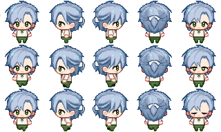
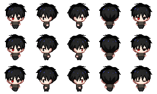
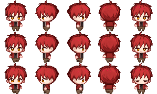
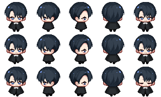
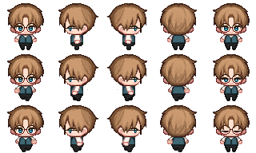
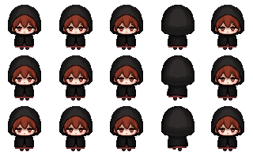


！
🌱 農田生長中…
藥草採收中…
🎣 垂釣中…
🎣 垂釣中…
🧪 研究藥水中…
🍳 烹飪中…
🔍 搜索中…
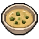
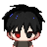
— 旁白 —
▼
⊞ 區域編輯模式
場景：戶外
🔵 互動區（藍）／🔴 不可行走區（紅）── 點選後可拖移或拉把手調整
（載入中…）
🟡 自由繪製 ── 在場景空白處拖拉，複製座標後貼入程式碼
（尚未繪製任何區域）
🎨 場景物件編輯器 ── 拖拉擺放物件位置
按 P 鍵開關
戶外場景物件 ── 點擊加入
（尚未新增任何物件）
[⬆⬇⬅➡] 移動 [空白鍵] 互動 [Esc] 關閉選單 [E] 背包 [Tab] 切換商店頁
阿瓦倫
🩹 疼痛
100
🌑 詛咒
100
☀ 心情
10
📚 知識
10
🍽 飽食度
70
艾德林
🍽 飽食度
80
❤️ HP
100
💪 體力
80
資源
💰 金錢 12
藥材 2
木材 0
樹枝 0
水晶碎片 0
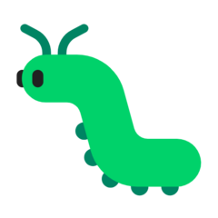
蟲材 0🐟 魚 0
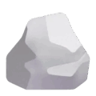
礦石 0 妖精 0
白藥花 0
🍎 蘋果 0
🥦 蔬菜 0
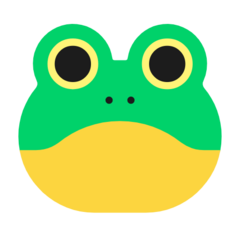
青蛙 0🥚 鳥蛋 0
🥩 獸肉 0
🦴 魔物素材 0
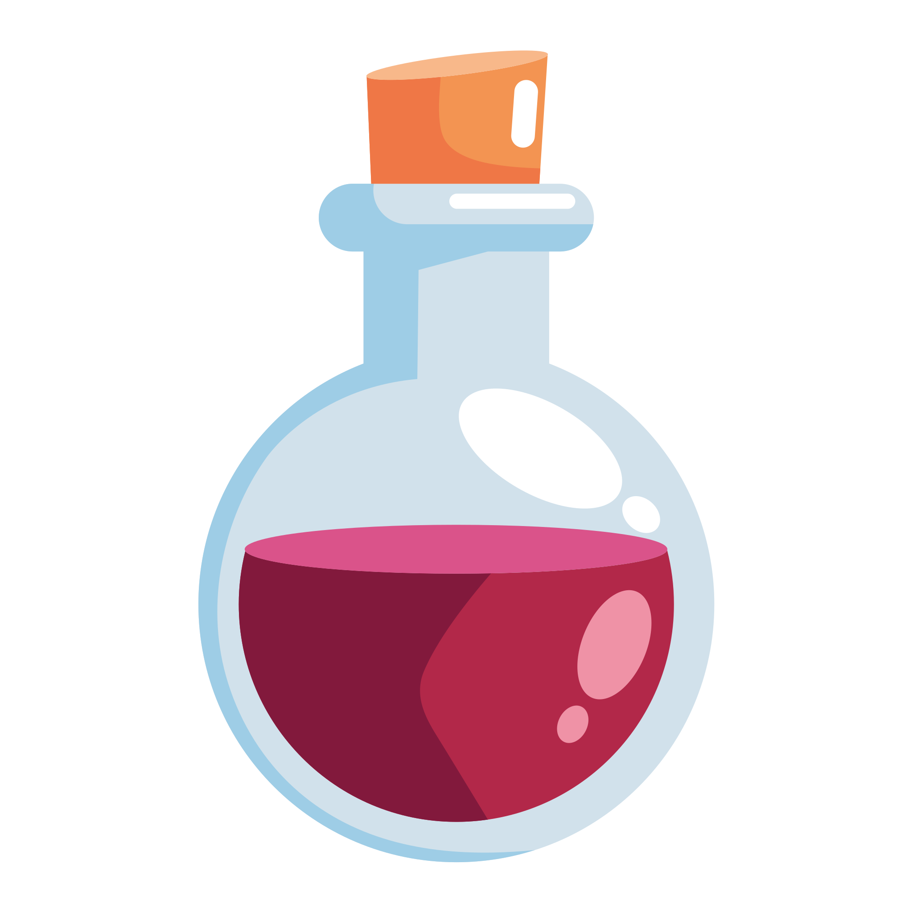
治療藥水 0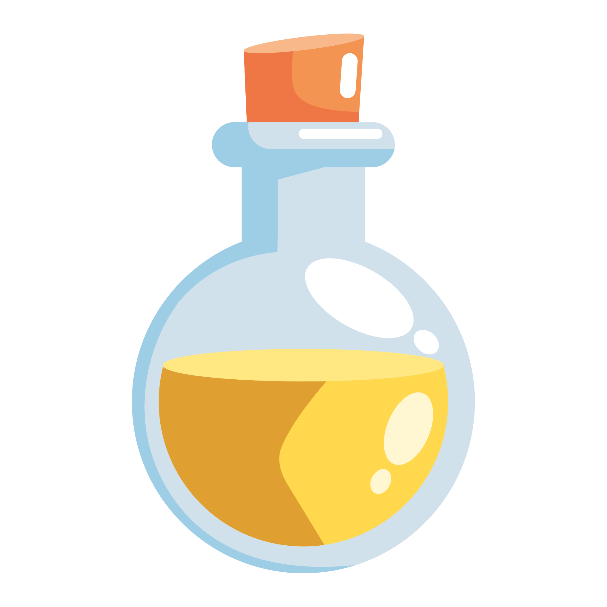
解咒藥水 0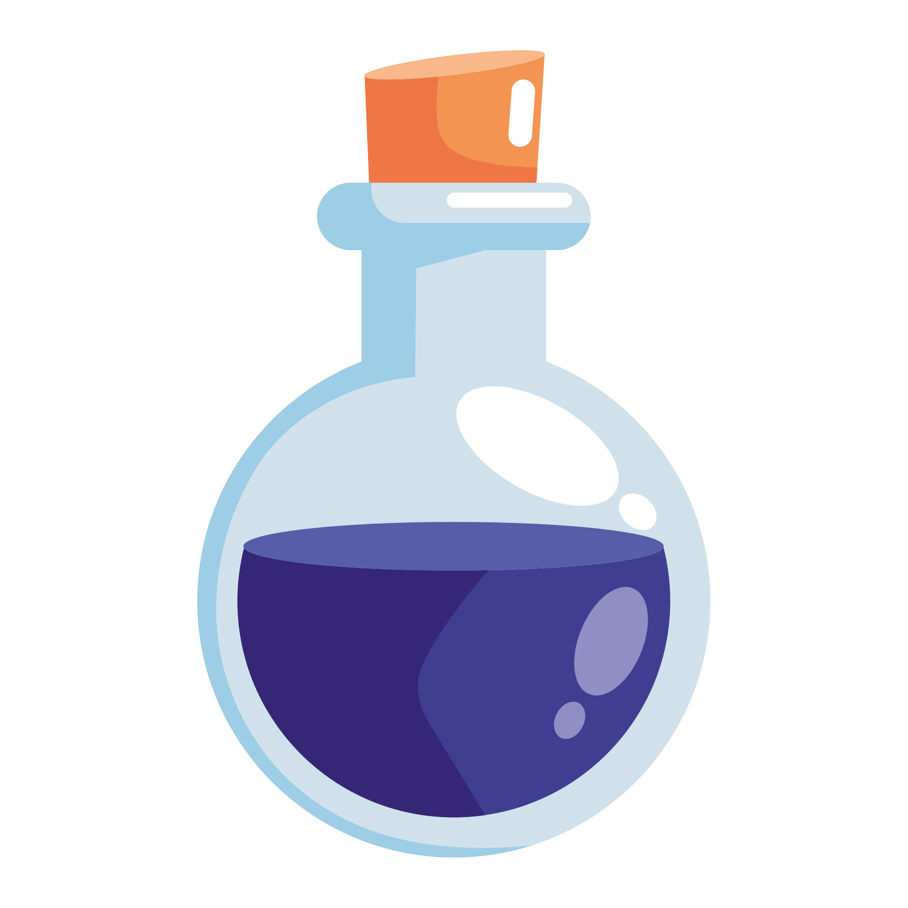
忘卻藥水 0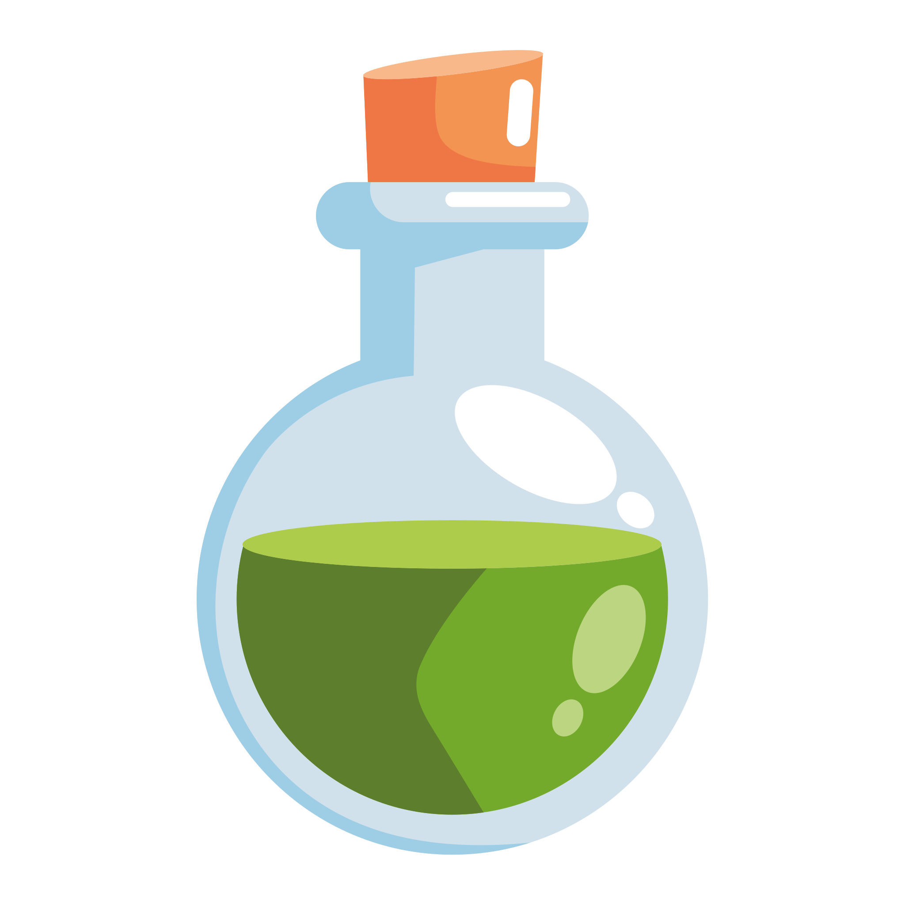
體力藥水 0今日時間
07:00
剩餘 13 小時
🧪 研究藥水中…